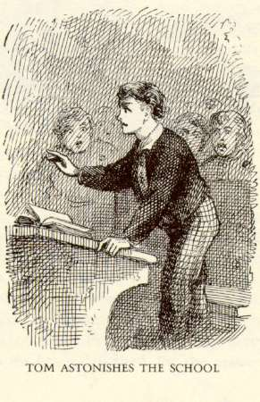

|  |
- Big River: From Novel to Stage
An Interpretive Exhibit by Alexa Tilley (Fall '13)
- The Making of Mark Twain & His Times
An Exhibit in UVA's Harrison Institute and Small Special Collections Library
Curated by the Graduate Students in ENAM 9500(Fall '09)
- The Soundtrack of Mark Twain
By Barbara Wheeler (ENAM 4500, Spring '10)
- Mark Twain
at Home:
Where He Lived and What He Wrote
By Kathleen S. Kiernan (ENAM 481, Fall '04)
- Mark Twain in Our
Times:
Twain, Television, and Pop Culture
By James Tysse (ENAM 482, Spring '02)
- "How
the Chimney-Sweep Got the Ear
of the Emperor": A Critical Edition
By Catherine Tousignant (ENCR 965, Spring '98)
- The Women
Who Influenced Mark Twain
By Alex Applebaum (ENAM 482, Spring '98)
- Romancing
the Indian:
Sentimentalizing & Demonizing in Cooper &
Twain
By Adriana Rissetto (ENAM 982, Fall '96)
- Mark Twain
& Southwest Humor
By Angel Price (ENAM 982, Fall '96)
- Huck
Finn and Folklore
By Maureen Riedy (ENAM 982, Fall '96)
- Pudd'nhead
Wilson Reviews
By Michael McFarland (ENAM 358, Spring '96)
|